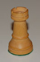
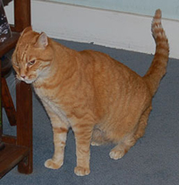

Sid: The role of Sid is played by Professor Plum, from Clue. Plum is a brilliant but absent-minded professor, and was a close friend of the late Reginald Boddy.

Stephen: The role of Stephen is played by White King’s Rook, from Chess. Rook has been a stalwart defender of the White King for many years, frequently castling to protect him in battle. He is noted for his mobility.
Liln: The role of Liln is played by Red Foam Piece, from SnaFooz. She fits in with the other five red pieces to form a cube.
York Funhaven: The role of York is played by Thimble, from Monopoly. His interests include sewing and real estate.
Jame: The role of Jame is played by Blue Wink, from Tiddlywinks. He is worth three tiddlies in the pot, and one if left unsquopped on the mat.
Aorist: The role of Aorist is played by Large Green Pyramid, from Icehouse. He can be used for a variety of games, including IceTowers, Zendo, and Martian Chess.
First Folio: The role of First Folio is played by Green Cranium Piece. A native of Planet Cranium, she passes through various party games in an attempt to reach Cranium Central.
Omicron: The role of Omicron is played by Ray the cat. He is 12 years old, and resides in Palo Alto.

This page covers the cast of Terror Island. For information about the characters in the strip, see our Dramatis Personae.